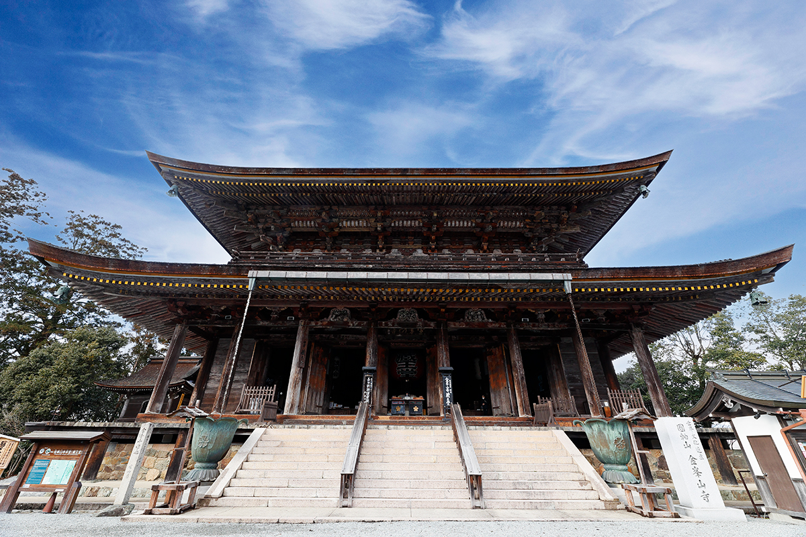
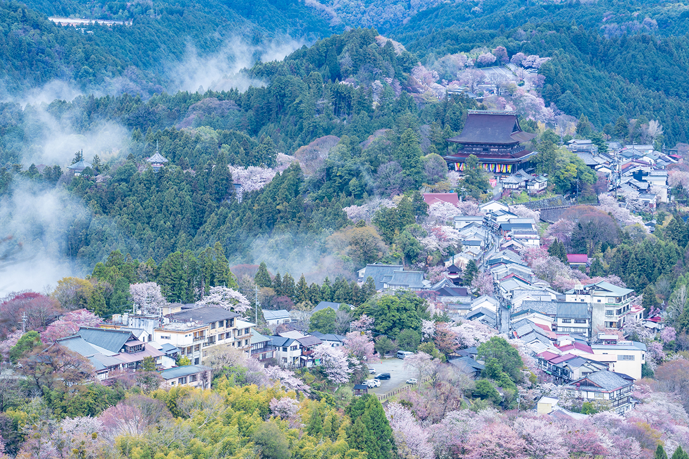
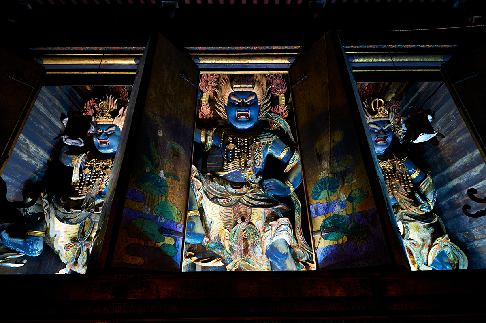
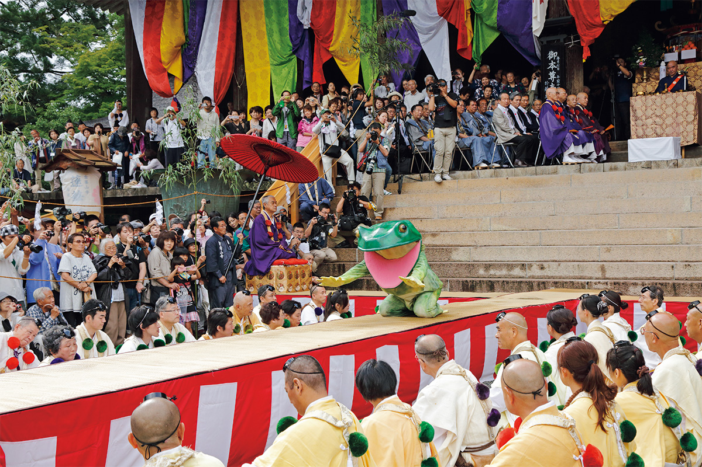
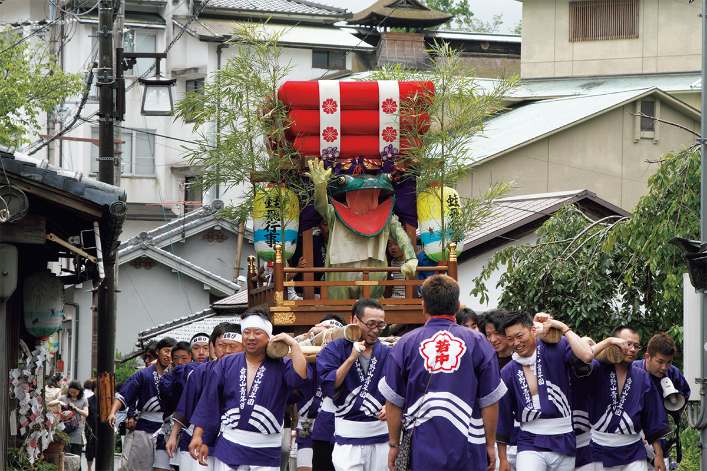
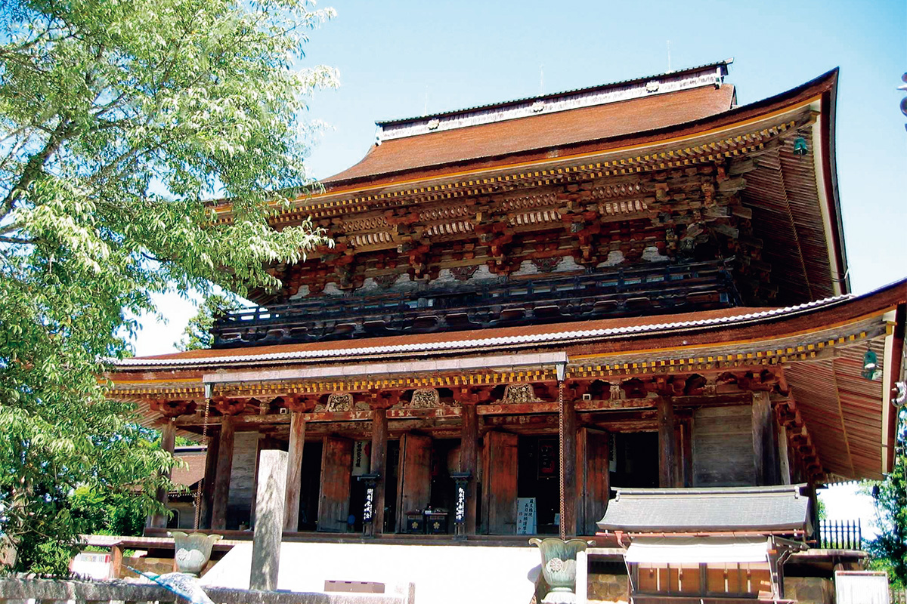
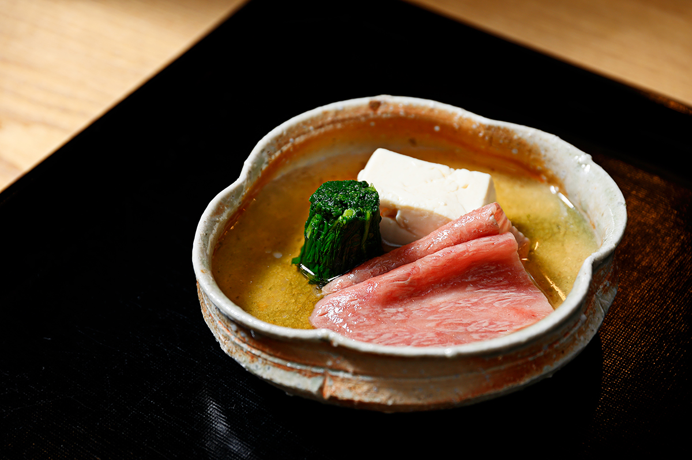
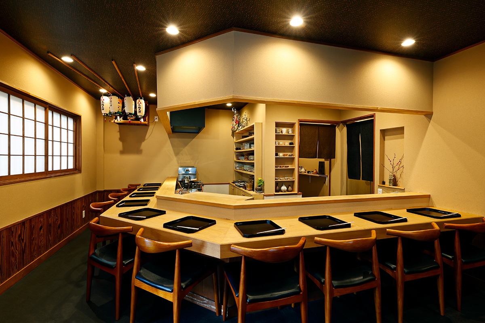
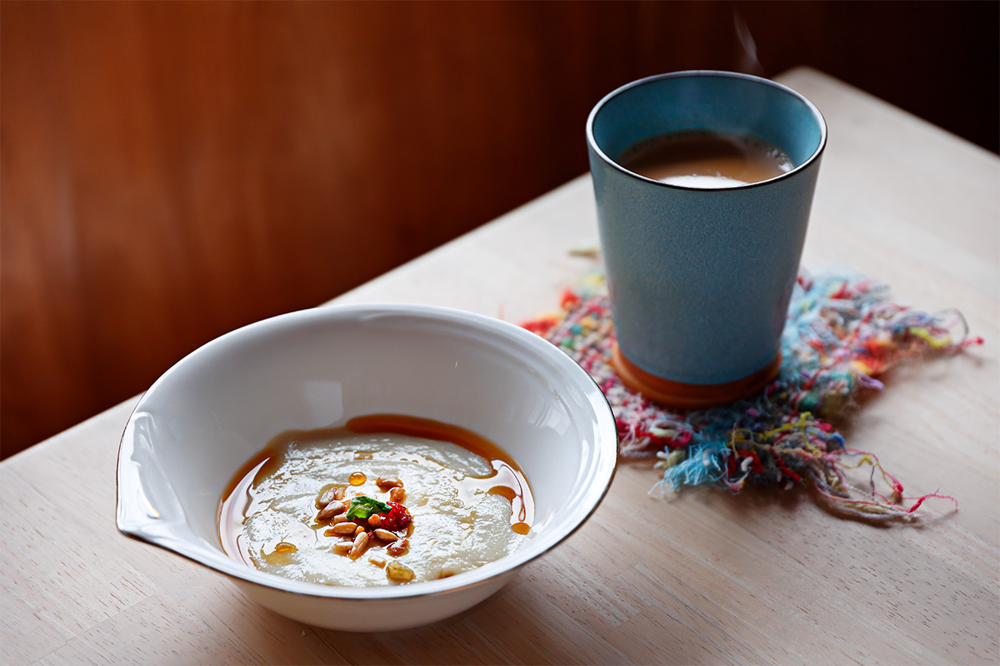
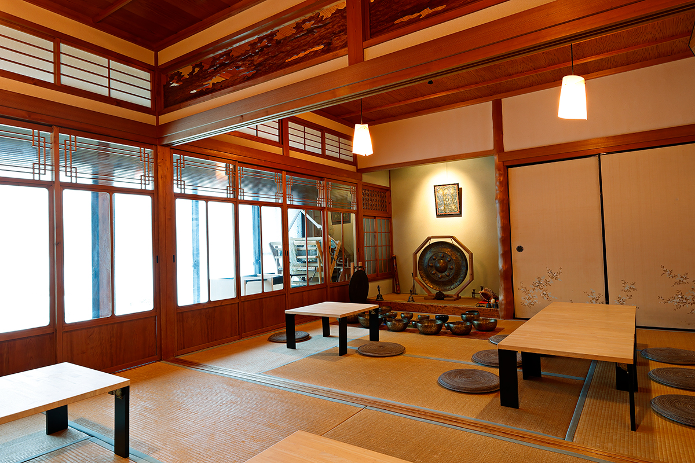

Префектура Нара · Ёсино · святые места
Ёсино: святая гора сюгэндо, праздник лягушки и онсэн в глубине гор Кии

Гора Ёсино на юге префектуры Нара больше тысячи лет служит святой землёй сюгэндо, японской веры горных подвижников. Здесь стоит главный храм этой веры, весной склоны покрывает сакура, а летом в храме выступает лягушка, которая когда-то была человеком.
Горы Кии
Три святые земли на одном полуострове
Горы Кии занимают юг полуострова Кии и лежат сразу в трёх префектурах: Нара, Вакаяма и Миэ. Здесь сложились три святые земли со своими верами: Ёсино и Оминэ, родина сюгэндо, гора Коя, центр эзотерического буддизма школы Сингон, и три святилища Кумано. В 2004 году их внесли в список Всемирного наследия ЮНЕСКО. Главная причина в том, что разные религии здесь веками жили бок о бок и были связаны паломническими тропами, «дорогами молитвы». Такое в мире встречается редко.

Тропы тоже вошли во Всемирное наследие. К Кумано ведут четыре дороги Кумано-кодо, Ёсино и Кумано соединяет горная тропа Оминэ-окугакэ-мити, а на гору Коя поднимается, например, тропа Тёиси-мити. Ехать сюда стоит не только ради храмов: природа, местная кухня и горячие источники раскрывают эти места не хуже.
Сюгэндо
Храм Кимпусэн-дзи и тайный Будда
Сюгэндо это вера горных подвижников. Они уходят в священные горы по всей Японии и проходят суровые испытания, чтобы обрести особую духовную силу и помогать с её помощью другим. В сюгэндо соединились древнее почитание природы, буддизм, даосизм и учение об инь и ян. Около 1300 лет назад Ёсино и Оминэ открыл для подвижников основатель сюгэндо Эн-но Гёдзя, и с тех пор эти горы почитают как святую землю.
На склоне горы Ёсино стоит Кимпусэн-дзи, главный храм сюгэндо. Сюда не раз приезжали на поклонение императоры и члены императорской семьи. Его главный зал Дзао-до внесён в список национальных сокровищ и считается сердцем всего объекта Всемирного наследия. Среди старинных деревянных построек Японии больше только зал Великого Будды в Тодайдзи.
Внутри Дзао-до стоят колонны из криптомерии, сосны, дзельквы и других деревьев, и кажется, что попал в древний лес. Здесь хранится главная святыня храма, Конго Дзао Дайгонгэн. «Гонгэн» означает божество или Будду, явившегося в другом облике. Это тайный Будда: его показывают лишь изредка, и называют его самым большим тайным Буддой Японии. По преданию, Эн-но Гёдзя вырезал его облик из дерева горной сакуры и так основал храм.

Весной 2023 года, когда храм собирал средства на большой ремонт ворот Нио-мон, статую несколько недель показывали всем посетителям.
С тайным Буддой связана и знаменитая сакура Ёсино. Склоны горы покрывает около 200 сортов вишни, которые сажали начиная с эпохи Хэйан, и весной гора целиком становится розовой.
«Паломники покупали у подножия саженцы сакуры и с благодарностью Дзао-гонгэну сажали их на горе. Тысяча вишен Ёсино это знак веры, и этот обычай жив до сих пор»
сотрудник храма Кимпусэн-дзи
В горах Кии живут разные веры, но, по словам того же сотрудника храма, в основе у них одно чувство: благоговение перед природой, которое есть в каждом человеке. Поэтому они и могут признавать друг друга. Здесь это можно заново почувствовать, оказавшись наедине с природой, то есть с богами и буддами.
Храм Кимпусэн-дзи
- Адрес
- префектура Нара, уезд Ёсино, посёлок Ёсино, Ёсинояма, 2498
- Телефон
- +81 746-32-8371
- Часы работы
- 8:30–16:00 (приём посетителей)
- Цены / Вход
- зал Дзао-до: взрослые 800 иен, старшеклассники и средние классы 600 иен, младшие классы 400 иен; в дни показа тайного Будды 1600, 1200 и 800 иен
- Сайт
- kinpusen.or.jp
Праздник
Рэнгэ-э: лягушка, которая снова стала человеком
Летом в Кимпусэн-дзи проходит один из самых необычных праздников Японии, «Каэру-тоби», прыжки лягушки. Его главный герой большая зелёная лягушка. Её качают на помосте с барабаном, она прыгает на сцене перед залом Дзао-до, а потом монахи читают сутры, и лягушка снова превращается в человека.


Прыжки лягушки входят в Рэнгэ-э, один из трёх главных обрядов храма. На Рэнгэ-э Дзао-гонгэну подносят цветы лотоса из пруда Бэнтэн-икэ в городе Ямато-Такада, и лягушачье действо проходит так же строго, как и остальная служба.

Рэнгэ-э и прыжки лягушки
- Даты
- 7 июля (в 2026 году)
- Адрес
- префектура Нара, уезд Ёсино, посёлок Ёсино, Ёсинояма, 2498 (храм Кимпусэн-дзи)
- Телефон
- +81 746-32-8371 (храм Кимпусэн-дзи)
- Сайт
- kinpusen.or.jp
Кухня
Oryori Hirooka: овощи Ямато за стойкой из криптомерии
Природа и история Нары чувствуются и в еде. Ресторан японской кухни Oryori Hirooka открылся в городе Годзё, к западу от Ёсино. Главное в нём традиционные овощи Ямато: они ведут род от сортов, которые выращивают в этих местах с древности. Даже обычная сюнгику, съедобная хризантема, удивляет здесь густым вкусом и ароматом.
Утром собранные овощи Ямато и другие продукты префектуры, сакэ из Нары, которую считают родиной японского сакэ, посуда местных мастеров, палочки, которые мастера делают из криптомерии Ёсино: в этом ресторане всё из Нары. Ради такой кухни сюда едут гурманы со всей страны. В 2023 году обед и ужин здесь подавали курсом из 10 блюд, от 8800 иен. В 2025 году ресторан переехал в город Нара.


«Хочу через кухню рассказать о Наре то, чего люди о ней ещё не знают»
хозяин ресторана
Oryori Hirooka
- Адрес
- префектура Нара, город Нара, Ганрин-ин-тё, 15 (с 2025 года; в 2023 году ресторан был в Годзё)
- Телефон
- +81 742-95-5587 (только по предварительной брони)
- Часы работы
- 12:00 (общее начало), 18:00–19:00 (вход, общее начало)
- Выходные
- среда
Онсэн
Тоцукава: источники у тропы подвижников
Недалеко от тропы Оминэ-окугакэ-мити, в глухих горах, лежит онсэн-округ Тоцукава. Нетронутые пейзажи и редкая по качеству вода заставляют забыть о суете. Тоцукава первой в Японии объявила, что во всех её онсэнах вода идёт прямо из источника, без повторного использования.
Кафе
Tenkawa Cafe Koo в старом доме
В деревне Тэнкава проходит часть тропы Оминэ-окугакэ-мити, и природа здесь сохранилась почти нетронутой. Tenkawa Cafe Koo устроено в старом деревенском доме. Меню здесь щадящее, на органических и веганских продуктах, и звучит спокойная музыка.


Tenkawa Cafe Koo
- Адрес
- префектура Нара, уезд Ёсино, деревня Тэнкава, Дорогава, 340-3
- Телефон
- +81 747-64-0280
- Часы работы
- 9:00–18:00
- Выходные
- нерегулярно
- Сайт
- koo-tenkawa.com
Фото: Норихито Судзуки, papa (PIXTA), отдел промышленности и туризма посёлка Ёсино.